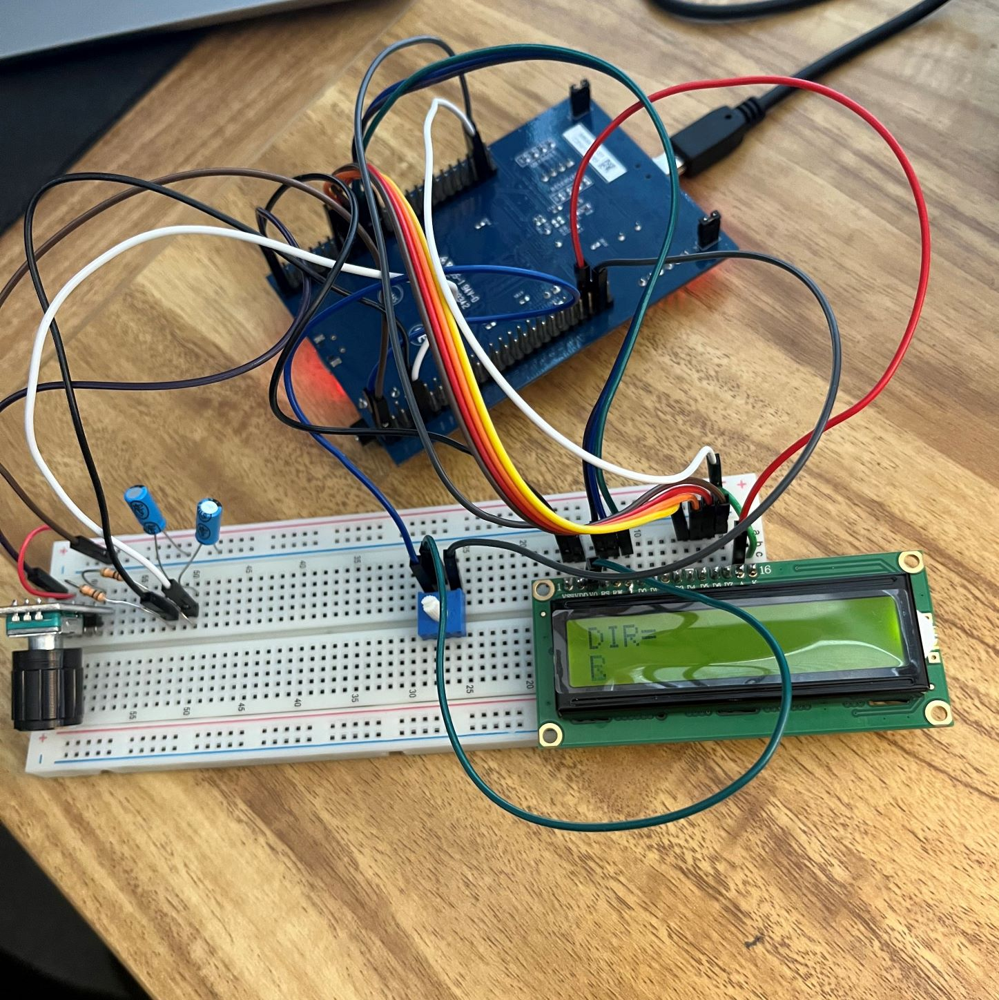

Contract Windows Application
A WPF (Windows Presentation Foundation) application that is used by the Service Center team to ensure contractual compliance on their agreements. It displays Notification informtion regarding a certain contract, such as partners, invoices, and purchase order documents. It has its own file explorer to add and remove documents pertaining to certain notifications.
This project was built during my Co-op at Collins Aerospace. I am the sole creator of it and am responsible for maintaining it now. This was my first time building a Windows application by scratch and I learned a lot from the process of it,
On the left is the main window to view the Notifications. On the Right is the file explorer for purchase order documents.

Discord Bot
A Discord Bot used to help facilitate the finding of lobbies on older Call of Duty games, in use by over 7,000+ individuals Users post images of their games into the channel of the game they are on, they bot then downloads the image, verifies that it is picture of a lobby, and then reposts it to the main channel for all to see.
It was built using Discord.py, Tensorflow, and Keras for the image recognition system. The machine learning model was created with a small dataset of only 2,000 previous images that had been posted to the server.
To the right is an example of an image being reposted.

Rotary Powered Motor
Takes input from the user through the rotary dial and turns the motor based on the number of clicks and which direction the turn the rotary dial. There is also and LCD display which informs you of how far you turned it and how many clicks has happened.
This was built using C and ARM assembly for ENGR331, Designing with Microprocessors. All peripherals were also wired by hand to an STM32F407 board.
